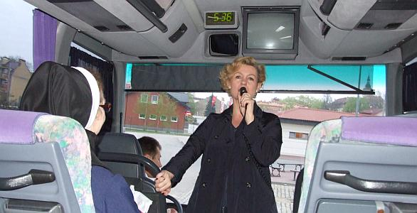
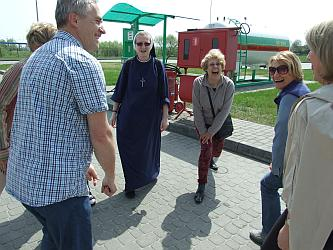
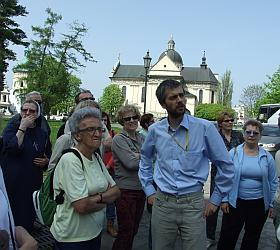
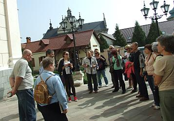
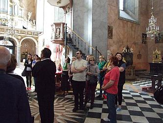
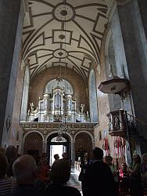
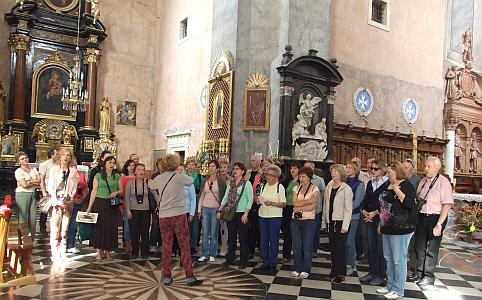
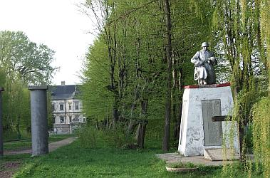
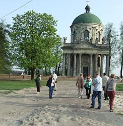
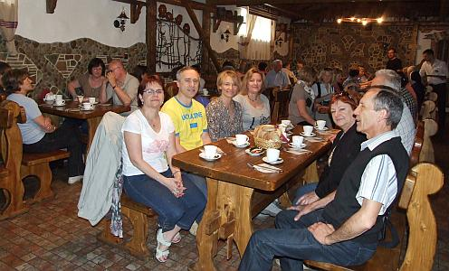

A tymczasem w Cameracie...
.
2013-04-30
Na miejsce wyjazdu przyjeżdża nasza „prezeska”, żeby nas pożegnać i życzyć udanych koncertów. Niestety tym razem nie może z nami jechać, szkoda :(
A więc w drogę. Przed nami granica i 550km . Ciekawa jestem ile w tym roku postoimy na granicy.
Pierwszy postój i rozruszanie kości.

Kolejny przystanek w naszej podróży - zwiedzamy Żółkiew.
„Dzięki zabytkom sztuki i historyi i wiążących się z nimi wspomnieniom, należy Żółkiew do najpiękniejszych i najbardziej godnych widzenia wśród mniejszych miast prowincjonalnych Glicyi” – tak w roku 1919 opisywał miasto Mieczysław Orłowicz.
 
Zwiedzamy też piękny kościół.
 
Jak Camerata to i śpiew, więc śpiewamy.

Kolejny kościół zamknięty, oglądamy przez kraty i ruszamy w dalszą drogę. Jesteśmy w Pdhorcach. Tutaj niestety również wszystko pozamykane, więc oglądamy z zewnątrz, zamek - pałac w stylu villa castello należący pierwotnie do Stanisława Koniecpolskiego, zbudowany w latach 1637-1641 oraz dzwonnicę i dalej w drogę.
 
Dojechaliśmy na nocleg. Obiadokolacja i …

spanko, bo rano o 07.00 śniadanie i w drogę.

© Stowarzyszenie Muzyczne Chór Camerata Wieliczka
Projekt i wykonanie:  Prowadzenie strony: Małgorzata Wysocka-Cebula
Prowadzenie strony: Małgorzata Wysocka-Cebula